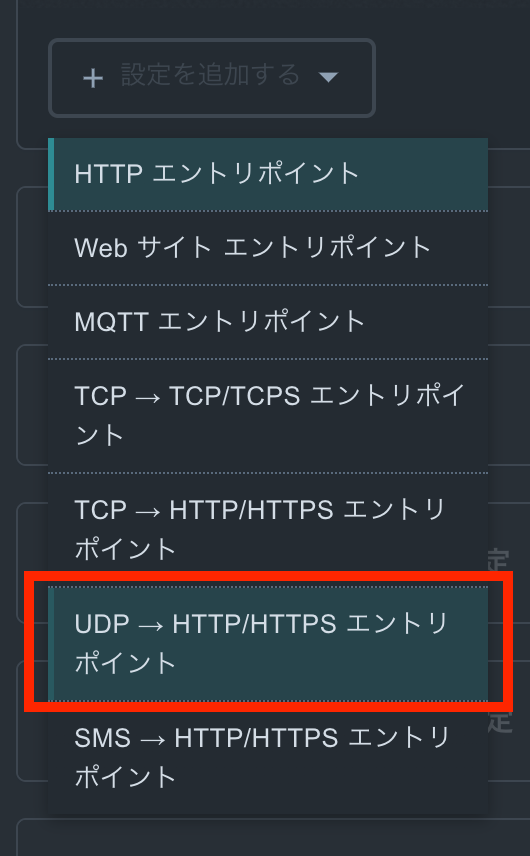

前提
このドキュメントを進めるにあたって、以下のデバイスが必要となります。
- SORACOM LTE-M Button for Enterprise (本ハンズオンではソラコムからの貸与となります)
このドキュメントを進めるにあたって、以下のアカウントが必要となります。
- SORACOM
- SAMユーザー
SORACOMのアカウントをお持ちでない方は https://users.soracom.io/ja-jp/guides/getting-started/create-account/ から作成してください。
本ハンズオンではSAMユーザーでの操作する前提のテキストになっています。SAMユーザーの作成がまだの方はhttps://users.soracom.io/ja-jp/docs/sam/create-sam-user/ から作成してください。
構成図

SORACOMユーザーコンソールへのログイン手順を解説します。
ユーザーコンソールへログインする
SORACOM ユーザーコンソール(SAMユーザログイン) (https://console.soracom.io/#/sam_login?coverage_type=jp) へアクセスします。SAMユーザのログイン画面が表示されますので、以下の通り入力し [ログイン] ボタンをクリックしてください。
- オペレータID : ボタンに付属しているカードに記載されているOPから始まる文字列
- ユーザ名 : user
- パスワード : 当日運営にお問い合わせください
以下のような「SIM 管理」画面が表示されたらログイン完了です。

ガジェット設定を行い、動作確認として、Enterprise Buttonをクリックした際に SORACOM Harvest に対してデータをクリックタイプを保存する方法を解説します。
ガジェット設定にて、グループを作成する。
- ユーザーコンソール(https://console.soracom.io/) の "Menu" から "ガジェット管理" の"LTE-M Button for Enterprise/Plus" をクリックします。
- "デバイスを追加"ボタンをクリックします。
- 今回使用するボタンが表示されているので、チェックを入れて、"次へ : グループを選択"をクリックします。
※もし、ボタン一覧に利用するボタンが表示されていない場合は、チューターにご連絡ください。 - 新規グループを作成 を選び、グループ名に任意の名前 (たとえば "handson-button")を入力して、"次へ : 設定を編集" をクリックします。
- 可視化セクションの"可視化を有効にする(SORACOM Harvest Data / Lagoon)"と簡易位置測位機能セクションの"位置情報を付与する(簡易位置測位機能)"にチェックを入れて、画面下部の"保存"ボタンをクリックします。

- 設定完了のダイアログが出てくれば、完了です。"デバイス一覧に戻る"をクリックして、デバイス一覧画面に戻ります。
- デバイス一覧にて、"SIMグループを編集"ボタンをクリックします。

- 作成したSIMグループの設定画面に移動しますので、SORACOM Air for セルラー設定 セクションで、簡易位置測位機能がON、バイナリーパーサーがONで、フォーマットに@buttonと入っていることを確認します。
- SORACOM Harvest Data 設定セクションにて、設定がONになっていることを確認します。
Enterprise Button を押して Harvest を確認する
いよいよ Enterprise Button を押します。ボタンをクリックし、 LED がオレンジ色となり、数秒後に緑色となればデータの送信は成功です。
Harvest 上のデータを以下の手順で確認します。
- "Menu" から "SIM 管理" を選択します。
- Enterprise Button の SIM の左端にある チェックボックスを選択し、"操作" => "データを確認" を選択します。
- "データ" 列にて、"clickTypeName" が "SINGLE" であることを確認します。
- マップピンアイコンを選択することで表示を地図に変更して、位置情報を確認します。左上の "+" や "-" でズームを調整できます。"データ" にも
$metadata.locationオブジェクトとしてで位置情報が入っています。 - Enterprise Button は以下 3 種類のクリックに対応しています。それぞれぜひ試してみてください。連続してデータの送信をしたい場合は Harvest の画面にて「自動更新」を "ON" にしてみてください。
- シングル: 短く(1.2 秒未満) 1 回押す
- ダブル: 2 秒以内にシングルクリックを 2 回行う
- ロング: 1.2 秒以上押し続ける。
SORACOM Beamを使って、デバイスからのデータを運営が用意したAWS環境に送信し、位置情報を可視化するところまでを解説します。
まず、利用するサービスについて解説します。
SORACOM Beamについて
今回のハンズオンでは、「データ転送支援サービス SORACOM Beam」を用いてAWS LambdaのFunction URLsのエンドポイントにデータを送信します。
SORACOM Beamについて詳しくは以下の公式ページを参照ください。
https://soracom.jp/services/beam/
利用料金
- 日本カバレッジ 1 リクエスト(*) あたり 0.00099 円
- グローバルカバレッジ 1 リクエスト(*) あたり 0.0000099 USD
(*) エントリーポイント (Beam) へのリクエスト、Beamから転送先へのリクエスト、それぞれを個別に 1 リクエストとカウントします。
今回のハンズオンでは、ほとんどの方は無料枠の中でご利用いただけます。
SORACOM Beamの設定
AWS Lambdaを呼び出すSORACOM Beamの設定をします。
所属させたグループ名をクリックし、SIMグループの設定画面に移動します。(以下はButtonの例ですが、GPSマルチユニットでも同様です)

SORACOM Beamのセクションで[設定を追加する]をクリックして、「UDP → HTTP/HTTPS エントリポイント」を選択します。

以下の設定を入力して「保存」をクリックします。
今回のハンズオンでは、AWS側のデバイスIDとして、カスタムヘッダで設定した値を利用しますので、必ず設定を行うようにしてください。
設定名 | 任意 |
ホスト名 | 当日運営よりご案内します。 ※デバイスによって異なるので、注意 |
レスポンス - ステータスコードを省略 | ON |
カスタムヘッダ | アクション : 追加 ヘッダ名 : x-soracom-device-name 値 : 任意ですが、英数字、ハイフン(-)、アンダースコア(_)、ドット(.)のみ利用可能です。 |

動作確認
デバイスから位置情報を送信してみましょう。オンライン上の運営が表示している画面に、カスタムヘッダで入力した値と緯度軽度が表示されればOKです。
位置を変えることで、デバイスの位置が変わりますので、休憩がてらにちょっと散歩に出かけてみましょう。
（Buttonの場合、押した場所によっては、基地局が変わらず、位置が変わらない可能性もあります）
後片付けの手順を解説します。
SIMグループの削除
SIMグループを削除するには、紐づいているSIMグループを削除してから削除する必要があります。
- SIMの紐付け解除は、SIMグループの登録と同じ手順で、SIMを選択して、SIMの所属グループ変更画面を表示します。
新しい所属グループで[グループ解除]を選択して、登録すれば解除されます。

- SIMグループの削除は、SIMグループ設定画面右上の[削除]をクリックします。

- 問題なければそのまま[削除する]をクリックします。これで完了です。

なお、SIMの紐付けがあると、エラーになりますので、必ずSIMの紐付けを全部解除してから行ってください。
ボタン持ち込み/GPSマルチユニット持ち込みの場合
このままでも、課金が発生することはありませんが、後片付けを行います。
後片付けの手順にある、以下の手順のみ行ってください。
- SIMグループの削除
ボタン貸し出しの場合
ボタン貸し出しの場合、SORACOMのコンソールからログアウトして、ボタンを運営メンバーにお返しください。
GPSマルチユニット貸し出しの場合
後片付けの手順にある以下の手順を実施した上で、GPSマルチユニットからSIMカードを外して、GPSマルチユニットをお返しください。
SIMカードはお持ち帰りください。
- SIMグループの削除